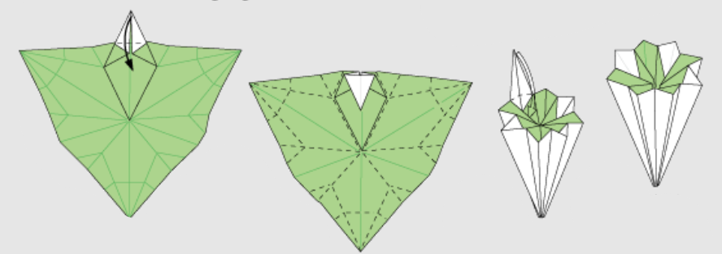
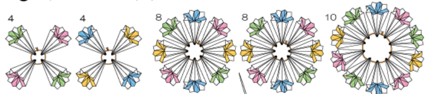

Origami con Ma. Alejandra
Kusudama Tradicional
¡Hola! Hoy aprenderás a hacer un kusudama tradicional de papel. Para ello, necesitarás:
- Nueve hojas de papel de un color
- Nueve hojas de papel de un color distinto al anterior
- Ocho hojas de papel de un color distinto a los anteriores
- Ocho hojas de papel de un color distinto a los anteriores
- Aguja e hilo (un metro aproximadamente)
- Pegamento
Los diagramas y pasos que serán mostrados a continuación fueron tomados de la página Origami Club - Traditional Kusudama
¡Comencemos!
Unidad
Pasos 1 a 5

Pasos 6 a 10

Pasos 11 a 14

Pasos 15 a 17
Ahora, repetir con los demás papeles hasta tener 34 unidades:

Ensamblado
A continuación, armar los grupos de unidades de la siguiente manera. Se recomienda abrir los huecos en los módulos con una aguja para que pasar los hilos resulte más fácil.
Por último, pegaremos los grupos de tal forma que en la parte superior e inferior queden los grupos de cuatro unidades, seguidos de los grupos de ocho, para finalizar con el grupo de diez unidades en la mitad.

¡Hemos terminado!